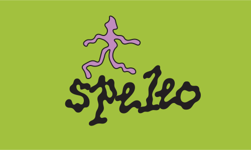
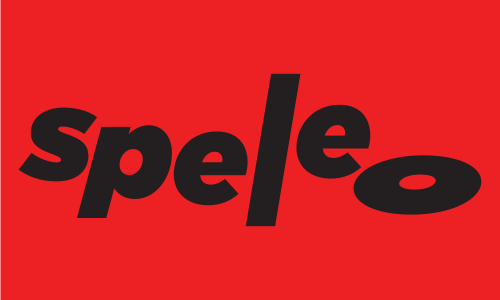

Speleo Record Label
Visual identity for an independent Vancouver record label, building a flexible brand system across digital and print touchpoints.
2025 · Graphic Designer

CONCEPT
The name "Speleo" comes from the Ancient Greek for "cave." The concept plays with this etymology: like caves that shape and colour sound through resonance, a record label shapes and colours music. The visual identity uses that spatial metaphor to suggest depth, echo, and the idea of discovering something underground.
PROCESS
Built a flexible brand system around a modular typographic mark. The vinyl record motif was integrated directly into the wordmark, creating a system that could adapt across different colourways and applications. The mark was designed to work both as a standalone logo and a repeating pattern across releases.
MATERIALS / FORMAT
Logo, release artwork templates, social and digital touchpoints, flexible colourway system.
REFLECTION
The system has held up well across different releases and artists. The modular approach means each release can feel distinct while remaining recognisably Speleo, which was exactly the brief.


